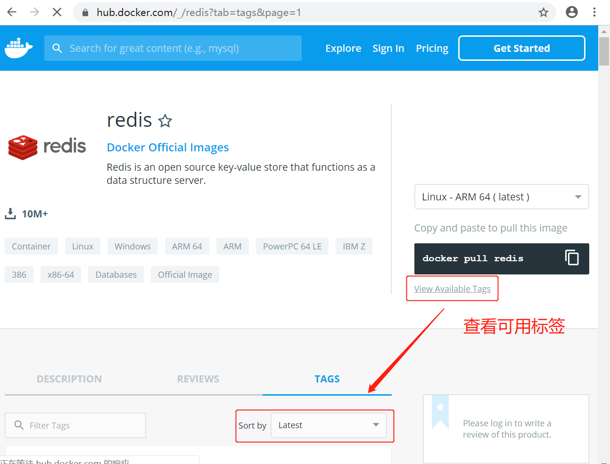
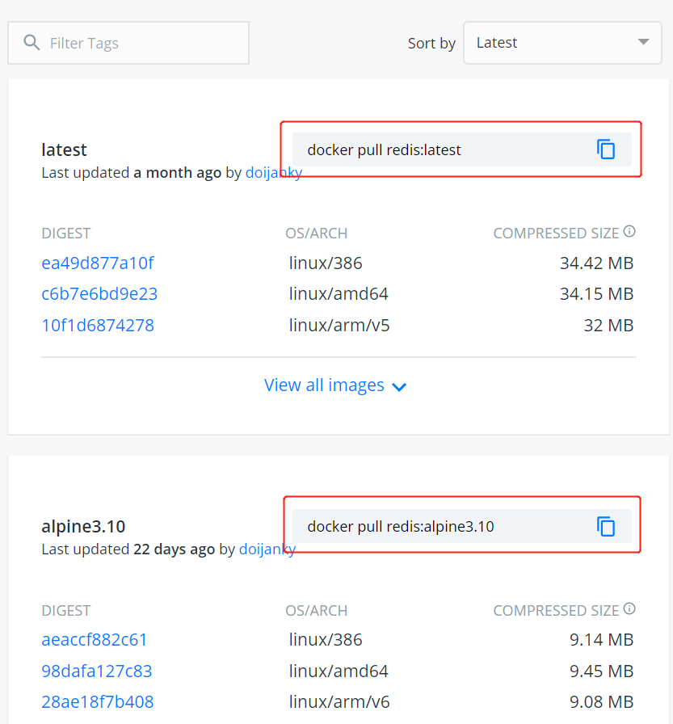

Redis 是一个开源的使用 ANSI C 语言编写、支持网络、可基于内存亦可持久化的日志型、Key-Value 的 NoSQL 数据库，并提供多种语言的 API。
查看可用的 Redis 版本
访问 Redis 镜像库地址： https://hub.docker.com/_/redis?tab=tags。
可以通过 Sort by 查看其他版本的 Redis，默认是最新版本 redis:latest。

可以在下拉列表中找到其他你想要的版本：


可以用 docker search redis 命令来查看可用版本：
$ docker search redis
NAME DESCRIPTION STARS OFFICIAL AUTOMATED
redis Redis is an open source key-value store that… 8564 [OK]
bitnami/redis Bitnami Redis Docker Image 161 [OK]
sameersbn/redis 81 [OK]
grokzen/redis-cluster Redis cluster 3.0, 3.2, 4.0, 5.0, 6.0 70
rediscommander/redis-commander Alpine image for redis-commander - Redis man… 47 [OK]
kubeguide/redis-master redis-master with "Hello World!" 33
redislabs/redis Clustered in-memory database engine compatib… 26
redislabs/redisearch Redis With the RedisSearch module pre-loaded… 24
oliver006/redis_exporter Prometheus Exporter for Redis Metrics. Supp… 22
arm32v7/redis Redis is an open source key-value store that… 21
redislabs/rejson RedisJSON - Enhanced JSON data type processi… 18
bitnami/redis-sentinel Bitnami Docker Image for Redis Sentinel 16 [OK]
redislabs/redisinsight RedisInsight - The GUI for Redis 13
webhippie/redis Docker images for Redis 12 [OK]
redislabs/redisgraph A graph database module for Redis 11 [OK]
s7anley/redis-sentinel-docker Redis Sentinel 10 [OK]
arm64v8/redis Redis is an open source key-value store that… 9
insready/redis-stat Docker image for the real-time Redis monitor… 9 [OK]
redislabs/redismod An automated build of redismod - latest Redi… 7 [OK]
centos/redis-32-centos7 Redis in-memory data structure store, used a… 5
circleci/redis CircleCI images for Redis 5 [OK]
clearlinux/redis Redis key-value data structure server with t… 2
tiredofit/redis Redis Server w/ Zabbix monitoring and S6 Ove… 1 [OK]
wodby/redis Redis container image with orchestration 1 [OK]
xetamus/redis-resource forked redis-resource 0 [OK]
取最新版的 Redis 镜像
$ docker pull redis:latest
latest: Pulling from library/redis
d121f8d1c412: Pull complete
2f9874741855: Pull complete
d92da09ebfd4: Pull complete
bdfa64b72752: Pull complete
e748e6f663b9: Pull complete
eb1c8b66e2a1: Pull complete
Digest: sha256:a05a8a1ebbef72690034a77451e6e83f4d899779190d1c00d8ab1a3a4fbbbd22
Status: Downloaded newer image for redis:latest
docker.io/library/redis:latest
查看本地镜像
$ docker images
REPOSITORY TAG IMAGE ID CREATED SIZE
mongo latest 923803327a36 7 hours ago 493MB
redis latest 84c5f6e03bf0 34 hours ago 104MB
运行容器
$ docker run -itd --name redis -p 6379:6379 redis
a9386073261af70ca33346f13c8f7bcb11d365d72671855ea4f562f326c8589d
参数说明：
-p 6379:6379：映射容器服务的 6379 端口到宿主机的 6379 端口。外部可以直接通过宿主机 ip:6379 访问到 Redis 的服务。
安装成功
$ docker ps
CONTAINER ID IMAGE COMMAND CREATED STATUS PORTS NAMES
a9386073261a redis "docker-entrypoint.s…" 52 seconds ago Up 50 seconds 0.0.0.0:6379->6379/tcp redis
c36ca6add3c1 mongo "docker-entrypoint.s…" 2 hours ago Up 2 hours 0.0.0.0:22017->22017/tcp, 27017/tcp mongo
通过 redis-cli 连接测试使用 redis 服务。
$ docker exec -it redis /bin/bash
root@a9386073261a:/data# redis-cli
127.0.0.1:6379>